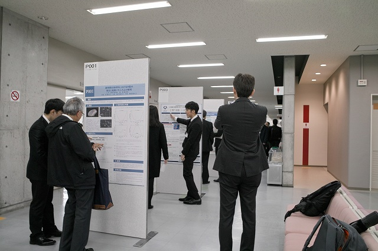

| ・ 関西支部第94期定時総会講演会＠立命館大学 びわこ・くさつキャンパス (H31.03.11) | |||
去年は4人でしたが、今年は3人です。T田さんが流体計測の研究で「回転像静止法を用いた円形容器内における非定常流れのPTV 計測」 、N谷さんが光計測の研究で「ホログラムの空間周波数解析による液滴衝突の検知」、T中さんが流体計測の研究で「流れ構造分析のための流速分布と流体力の同時計測」をポスター発表しました。超大型GWにより就活も 前倒し気味で忙しいのですが、修士のまとめとして技術面接にも使えるしと好評です。 |
|||
|
もう迷子にならない |

長い廊下で | ||
|
N谷さん |
発表中 | ||
|
T田さんも |
いい感じに | ||
|
就活用に |
ポーズを | ||
|
質疑中 |
指示棒用意しました | ||
|
明日は就活なので研究打ち合わせ中 |
議事録は写メで | ||
|
特別公演を聞いて |
懇親会も | ||
|
それでは |
乾杯 | ||